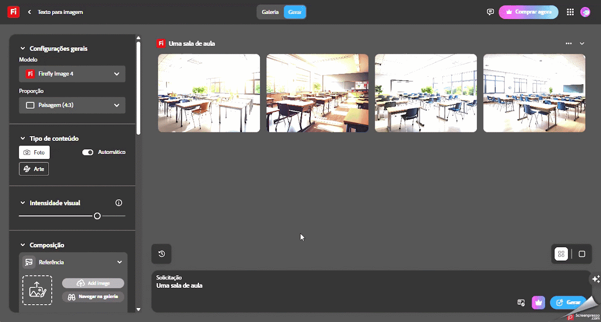

Adobe Firefly
Apoiar a aprendizagem com representações visuais, estimular a criatividade e facilitar a inclusão de alunos com diferentes estilos de aprendizagem.
Ficha técnica
Visão geral
O que é o Adobe Firefly?
O Adobe Firefly é uma plataforma de inteligência artificial generativa desenvolvida pela Adobe, integrada à Creative Cloud. Ela permite criar e editar imagens, aplicar efeitos de texto, recolorir vetores e muito mais, tudo a partir de descrições em linguagem natural. A ferramenta é acessível diretamente pelo navegador, sem necessidade de instalação.
Fluxo de uso
Como utilizar o Adobe Firefly
Etapa 1
Cadastro
- Acesse o site oficial: https://firefly.adobe.com/?media=featured.
- Faça login com sua Adobe ID: utilize sua conta Adobe existente ou crie uma gratuitamente.
- Aceite os termos de uso: ao acessar pela primeira vez, será necessário aceitar os termos e condições de uso.

Etapa 2
Utilizando os recursos do Adobe Firefly
- Texto para Imagem - Transforme descrições textuais em imagens realistas
- Selecione a opção "Texto para Imagem" no painel principal.
- Insira uma descrição detalhada da imagem que deseja criar.
- Ajuste proporção, estilo e tipo de conteúdo conforme desejado.
- Clique em "Gerar" para visualizar as opções criadas pela IA.
- Preenchimento Generativo - Adicione, substitua ou remova elementos de uma imagem existente
- Escolha a opção "Preenchimento Generativo".
- Faça upload da imagem que deseja editar.
- Insira uma descrição do que deseja adicionar ou substituir.
- Clique em "Aplicar" para que a IA realize a modificação.
- Efeitos de Texto - Crie efeitos visuais impressionantes a partir de textos
- Selecione "Efeitos de Texto" no painel principal.
- Digite o texto que deseja estilizar.
- Forneça uma descrição do estilo ou efeito desejado.
- Clique em "Gerar" para visualizar as opções criadas.
- Recoloração Generativa - Altere as cores de vetores de forma inteligente
- Escolha "Recoloração Generativa".
- Faça upload de um arquivo SVG ou selecione um modelo disponível.
- Insira uma descrição das cores ou estilo desejado.
- Clique em "Aplicar" para visualizar as variações geradas.

Etapa 3
Salvando e compartilhando
- Download: após gerar ou editar uma imagem, clique em “Download” para salvá-la em seu dispositivo.
- Compartilhamento: utilize a opção “Compartilhar” para obter um link direto ou salvar em suas bibliotecas da Creative Clould.

Boas práticas
Dicas adicionais
- Créditos Generativos: usuários gratuitos possuem um número limitado de créditos mensais para utilizar os recursos de IA. Planos pagos oferecem mais créditos e funcionalidades adicionais.
- Integração com Outros Aplicativos: o Adobe Firefly está integrado a ferramentas como Photoshop, Illustrator e Adobe Express, permitindo uma experiência de edição mais completa.
- Acesso Móvel: embora não haja um aplicativo dedicado, o Firefly pode ser acessado via navegadores móveis compatíveis.